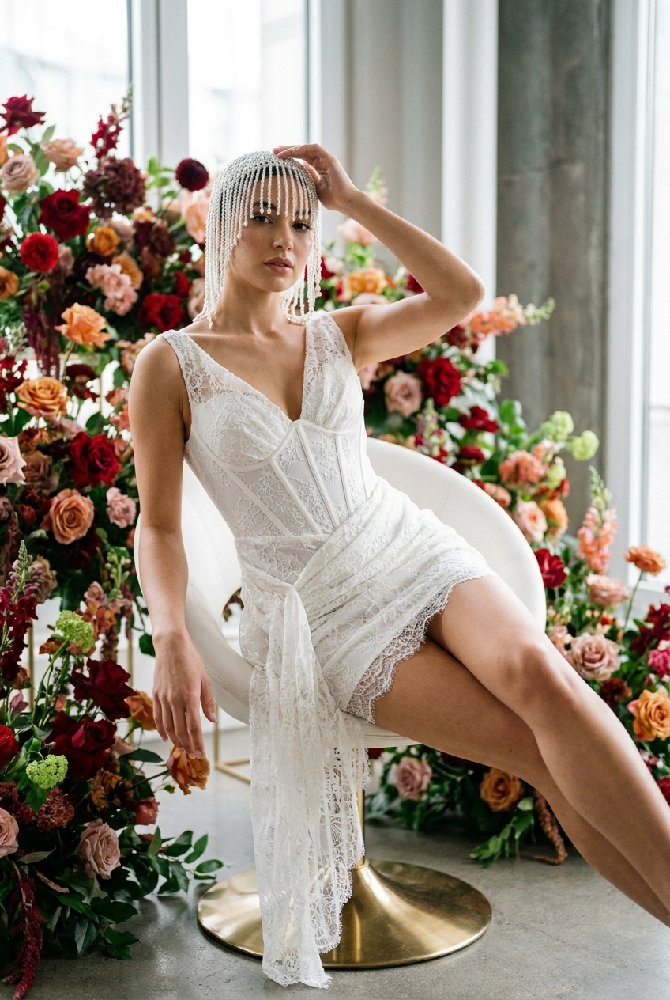
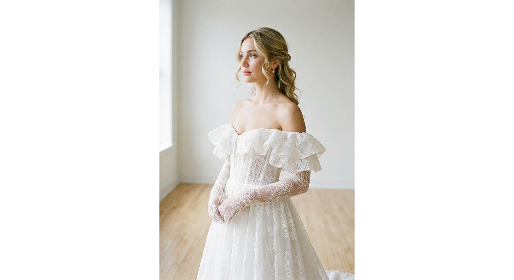
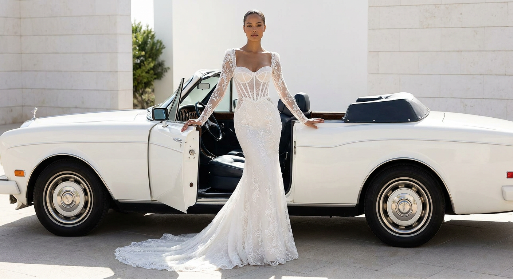
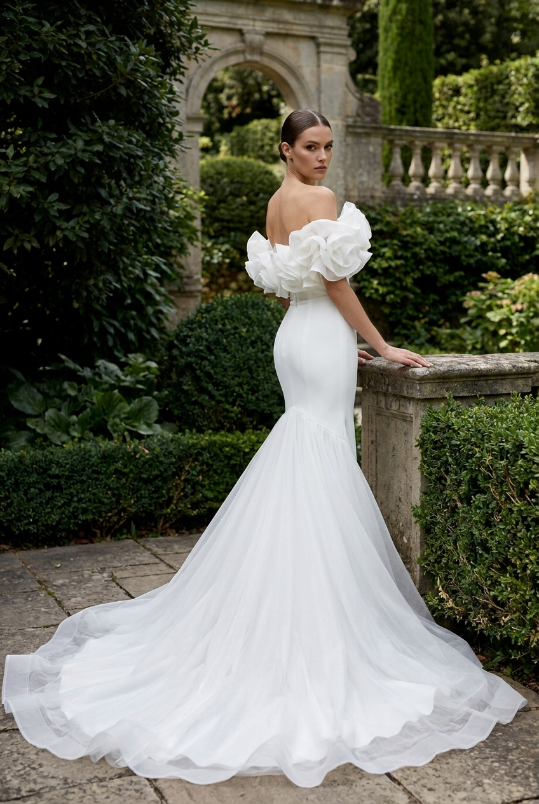
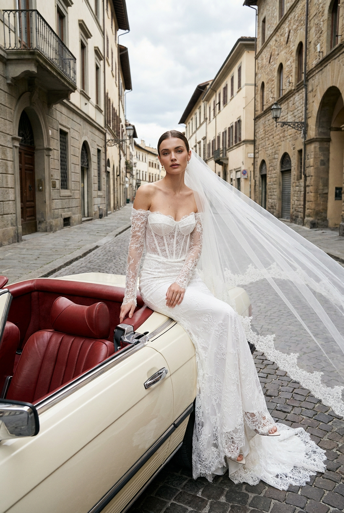
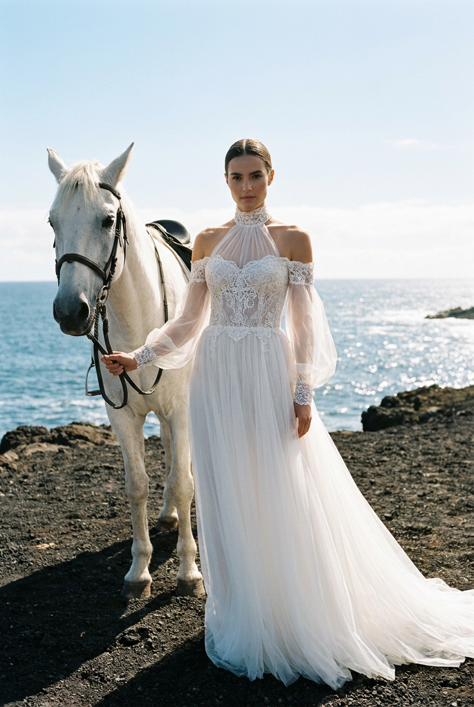
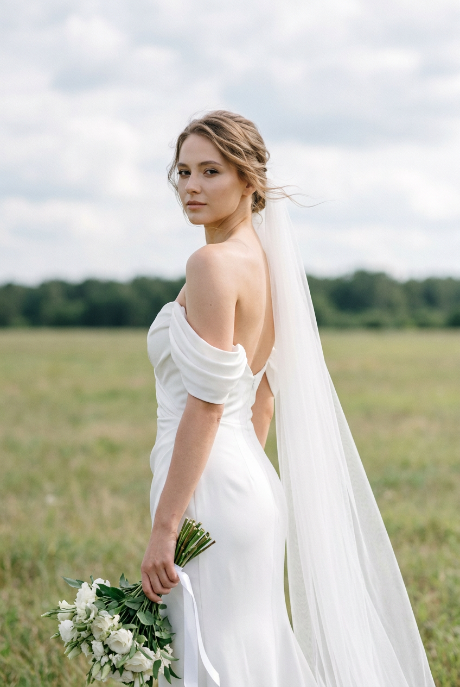
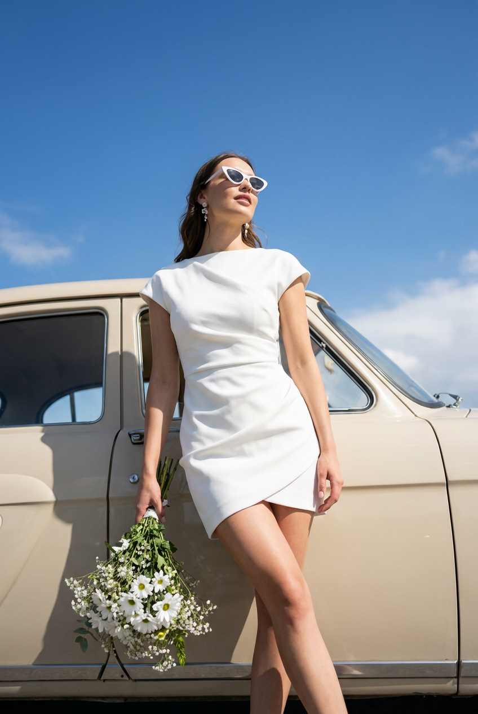

ИИ-фото в свадебном платье: 8 промптов для нейросети

Свадебная съёмка требует локации, стилиста, фотографа и удачной погоды, а повторить нужный образ с первого раза бывает непросто. Генерация помогает заранее примерить платье и собрать выразительный кадр даже без полноценной фотосессии.
В подборке — восемь сценариев для ИИ-фото: роскошный интерьер с цветами, минималистичный шоурум, винтажный автомобиль, дворцовый сад, городской кабриолет, морской берег с лошадью, зелёный луг и ретро-автомобиль под голубым небом.
Как сгенерировать такое фото: пошагово
Нужен снимок анфас при ровном свете, лицо в кадре целиком, без тёмных очков и головных уборов. Разрешение от 1000 пикселей по короткой стороне. Чем чётче исходник, тем точнее модель повторит черты.
Выберите сценарий ниже и нажмите «Копировать» — текст уйдёт в буфер целиком, вместе с командой сохранения внешности. Эта команда стоит первой строкой и отвечает за то, чтобы на выходе было ваше лицо, а не случайное.
Кнопка «Сгенерировать» рядом с каждым промптом открывает модель в новой вкладке. Nano Banana Pro работает с референсом лица — в отличие от моделей, которые генерируют портрет с нуля и узнаваемость теряют.
Промпт — в поле ввода, портрет — через загрузку референса. Порядок значения не имеет, но без референса команда сохранения внешности работать не будет: модели нечего сохранять.
Для сторис и ленты берите 9:16, для превью и обложек — 4:3. Первый результат редко идеален: если поза или свет ушли не туда, поправьте соответствующую часть промпта и запустите заново. Обычно хватает двух-трёх итераций.
8 промптов для генерации
1. Цветочный свадебный шоурум
Строго сохранить внешность по загруженному референсу: черты лица, пропорции, мимику и текстуру кожи без изменений. Вертикальная фотореалистичная bridal fashion editorial-съёмка в роскошном интерьере, напоминающем свадебный салон, арт-пространство или дорогой fashion showroom. Девушка с лицом по загруженному референсу, естественной мимикой и точными индивидуальными чертами. Она сидит на белом современном кресле или округлом дизайнерском стуле с гладкой поверхностью и золотистой металлической опорой, поза расслабленная, но скульптурная. Вокруг — плотная театральная инсталляция из крупных живых цветов: насыщенно-красных, бордовых, оранжевых, розовых и коралловых, с тёмно-бордовыми оттенками и зелёными стеблями. На заднем плане большие окна или светлая архитектурная поверхность, дорогая интерьерная атмосфера, мягкий естественный свет, высокая детализация ткани и кожи, editorial luxury, объектив 85 мм, диафрагма f/2.0, вертикальный кадр 4:5.
2. Минималистичный bridal-шоурум

Строго сохранить внешность по загруженному референсу: черты лица, пропорции, мимику и текстуру кожи без изменений. Фотореалистичный вертикальный bridal editorial-портрет девушки с лицом по загруженному референсу, без изменения её естественных пропорций и мимики. Светлый минималистичный интерьер: гладкие нейтральные стены, белый плинтус, светлый деревянный или паркетный пол, спокойная почти пустая композиция без мебели и лишнего декора. Девушка стоит почти фронтально, корпус немного развёрнут влево, вес перенесён на одну ногу, плечи свободные. Голова повёрнута в левый профиль, взгляд направлен в сторону и чуть вверх, выражение благородное, мечтательное, уверенное и сдержанное, губы нейтральные или слегка приоткрыты. Мягкий дневной свет из окна, ощущение дорогой дизайнерской студии или bridal showroom, акцент на силуэте свадебного платья, натуральная фактура ткани, объектив 85 мм, f/2.8, вертикальный формат 4:5.
3. Платье у винтажного кабриолета

Строго сохранить внешность по загруженному референсу: черты лица, пропорции, мимику и текстуру кожи без изменений. Вертикальная фотореалистичная bridal editorial-фотография в стиле luxury fashion campaign: девушка с лицом по референсу стоит у открытых дверей белого винтажного автомобиля на ярком солнечном воздухе. Главный объект — свадебное платье ivory, pearl white или soft white, силуэт mermaid. Лиф плотно облегает фигуру, имеет выраженную корсетную конструкцию, чёткую талию и полупрозрачную кружевную основу. Видны тонкие вертикальные линии внутреннего корсета, плотная посадка по груди и талии, элегантный глубокий sweetheart neckline с мягкой сердцевидной линией. Силуэт и все детали платья повторить максимально точно, без упрощения декора. Фон чистый и светлый, минималистичная outdoor-локация, солнечный контрастный свет, дорогая рекламная съёмка, естественная поза у открытой двери, реалистичная кожа и кружево, объектив 50 мм, f/2.8, вертикальный кадр 4:5.
4. Свадебный образ в дворцовом саду

Строго сохранить внешность по загруженному референсу: черты лица, пропорции, мимику и текстуру кожи без изменений. Фотореалистичная вертикальная bridal editorial-съёмка в роскошном саду или дворцовом парке. Девушка с лицом по загруженному референсу стоит в полупрофиль рядом с каменной дорожкой, круглой чашей фонтана или низкой садовой стеной. Корпус развёрнут от камеры, спина и линия талии вытянуты, одна рука лежит на верхнем крае каменной стены, вторая мягко опирается на бортик или скрыта корпусом. Голова повернута через плечо к объективу, выражение спокойное, изящное и уверенное. Вокруг густая тёмно-зелёная растительность, аккуратно подстриженные кусты и деревья; вдали видны классическая архитектурная арка и балюстрада. Атмосфера дорогого европейского сада при вилле или особняке, мягкий рассеянный дневной свет, роскошное свадебное платье, подчёркнутая фактура ткани, cinematic luxury bridal outdoor editorial, объектив 85 мм, f/2.2, вертикальный формат 4:5.
5. Городской кадр с красным салоном

Строго сохранить внешность по загруженному референсу: черты лица, пропорции, мимику и текстуру кожи без изменений. Вертикальная фотореалистичная bridal fashion editorial-фотография на улице европейского исторического центра. В кадре старинные каменные и оштукатуренные здания, балконы, арочные окна, тёмный асфальт, дорожные столбики и уличные фонари; над городом приглушённое облачное небо. Девушка с лицом по референсу сидит боком на задней части открытого спорткара или кабриолета, корпус немного развёрнут к камере, одна рука опирается на кузов или край сиденья, поза элегантная и скульптурная. У автомобиля светлый кузов и роскошный красный кожаный салон, детали машины хорошо различимы. Свадебное платье выглядит дорого, силуэт вытянутый, складки и фактура ткани реалистичны. Настроение urban bridal campaign, кинематографичный городской свет, лёгкое отражение на влажном асфальте, объектив 50 мм, f/2.8, вертикальный кадр 4:5.
6. Морской берег и белая лошадь

Строго сохранить внешность по загруженному референсу: черты лица, пропорции, мимику и текстуру кожи без изменений. Фотореалистичная вертикальная bridal-fashion фотография на морском берегу. Девушка с лицом по загруженному референсу стоит в полный рост рядом с белой лошадью, корпус почти фронтальный, но слегка развёрнут. Голова поднята и немного наклонена, взгляд спокойный, мягкий и благородный — прямо в камеру или чуть в сторону. Одна рука свободно опущена и держит поводья либо тонкий чёрный ремешок от уздечки, кисть расслаблена. Под ногами тёмный песок или вулканическая каменистая поверхность, за спиной открытое пространство, ярко-голубое небо и светящееся море. Ветер естественно двигает фату и лёгкие элементы свадебного платья. Настроение luxury coastal bridal campaign: airy, romantic, dreamy, sunlit. Реалистичные анатомия девушки и лошади, естественные тени, солнечный контровой свет, объектив 35 мм, f/4, вертикальный формат 4:5.
7. Полевой портрет через плечо

Строго сохранить внешность по загруженному референсу: черты лица, пропорции, мимику и текстуру кожи без изменений. Фотореалистичная вертикальная bridal fashion-фотография на открытом летнем лугу. Девушка с лицом по загруженному референсу стоит спиной к камере, корпус развёрнут на три четверти. В одной опущенной руке она держит букет белых цветов с зелёной листвой и длинной белой лентой; букет расположен в нижней левой части кадра. Голова повернута через плечо назад, взгляд мягкий, спокойный и немного загадочный, выражение нежное и уверенное, губы расслаблены, без широкой улыбки. На девушке изящное свадебное платье, его силуэт и фактура хорошо читаются со спины и в полуповороте. Вокруг мягкая трава, широкий свободный горизонт, вдали тёмно-зелёная линия деревьев, верх кадра занимает светлое облачное небо. Лёгкий ветер, естественный рассеянный свет, ощущение тишины и свободы, объектив 85 мм, f/2.8, вертикальный кадр 4:5.
8. Ретро-автомобиль под небом

Строго сохранить внешность по загруженному референсу: черты лица, пропорции, мимику и текстуру кожи без изменений. Фотореалистичная вертикальная fashion-фотография в яркий солнечный день, bridal editorial с ретро-настроением. Девушка с лицом по загруженному референсу стоит рядом со светлым винтажным автомобилем кремово-бежевого оттенка, выполненным в стиле середины XX века. В кадре отчётливо видны округлые линии кузова, дверца и окно машины. Огромное чистое голубое небо занимает большую часть верхней половины изображения, фон минималистичный и светлый. Девушка в полный рост стоит вплотную к двери или опирается на автомобиль, корпус слегка наклонён вперёд, ноги красиво выстроены, силуэт вытянут. Голова немного поднята, поза уверенная, женственная и слегка игривая, как в high-fashion кампейне. Свадебное платье выглядит воздушным и дорогим, ткань получает яркие солнечные блики. Атмосфера retro luxury, летняя съёмка, естественные тени, объектив 50 мм, f/4, вертикальный формат 4:5.
Что важно учесть в этом стиле
Свадебный editorial держится на чистом силуэте, выразительной позе и контролируемом свете. Если в сцене есть машина, фонтан или лошадь, не позволяйте второстепенным объектам спорить с платьем: попросите нейросеть сохранить главный акцент на фигуре и фактуре ткани.
Для портрета подойдёт объектив 85 мм и открытая диафрагма f/2–2.8: лицо останется резким, а фон мягко уйдёт в размытие. Для кадров в полный рост и сцен с автомобилем лучше использовать 35–50 мм, чтобы сохранить пропорции тела и показать окружение. Вертикальный формат 4:5 удобен для публикации и не обрезает платье по подолу.
Идеи для вариаций
- Замените белые цветы в интерьере на кремовые пионы, алые розы или сухоцветы.
- Попросите добавить длинную фату, перчатки до локтя, жемчужные серьги или тонкую тиару.
- Перенесите съёмку у автомобиля на рассвет или в синий час, сохранив читаемый силуэт платья.
- Для морской сцены добавьте развевающуюся фату, мокрые камни и лёгкий соляной туман.
- В полевом кадре замените букет на ветви эвкалипта, белые каллы или небольшой каскадный букет.
- Сделайте городскую версию чёрно-белой, оставив красный салон автомобиля единственным цветовым акцентом.
Как собрать свой промпт
Сначала задайте формат и тип съёмки: «вертикальный фотореалистичный bridal editorial, кадр 4:5». Затем опишите героиню и платье: материал, цвет, силуэт, вырез, длину, фату и важные декоративные элементы. Чем точнее зафиксирован крой, тем меньше случайных изменений в результате.
После этого добавьте локацию, позу, направление взгляда и свет. В конце укажите объектив, диафрагму и число попыток: например, «85 мм, f/2.2, сделать 6 вариантов, выбрать кадр с естественными руками и полностью видимым подолом». Для сохранения лица используйте один и тот же качественный референс, а не несколько снимков с разным освещением.
Ошибки, из-за которых кадр не получается
- Слишком много объектов. Фонтан, цветы, машина и архитектура одновременно могут перегрузить композицию. Оставьте один главный акцент кроме модели.
- Нет описания позы. Без положения рук, ног и направления взгляда нейросеть часто создаёт неестественную пластику.
- Платье описано общими словами. Укажите силуэт, тип выреза, конструкцию лифа, цвет и фактуру ткани.
- Неверный фокус. Для полного роста не ставьте слишком длиннофокусный объектив: часть платья или автомобиля может исчезнуть из кадра.
- Слишком открытая диафрагма в сложной сцене. При f/1.2–1.4 лошадь, автомобиль или детали интерьера могут превратиться в нечёткие пятна.
- Отсутствует проверка рук и лица. Перед публикацией увеличьте изображение и проверьте пальцы, линию подбородка, глаза, зубы и соединения ткани.
Частые вопросы
Как сделать такое ИИ-фото бесплатно?
Можно попробовать Kandinsky и Шедеврум: они подходят для генерации по тексту и обычно доступны без оплаты в базовом режиме. Krea AI и Arena.ai удобны для экспериментов и сравнения вариантов, но бесплатный доступ может быть ограничен очередью, числом генераций или разрешением. С референсом лица результат зависит от конкретной функции: не каждый сервис точно переносит внешность, а изображение может потребовать нескольких попыток и ручной проверки.
Как сохранить лицо по фотографии?
Загрузите чёткий референс анфас или в лёгком повороте, без очков, сильных теней и фильтров. В промпте опишите сцену отдельно от внешности, а для лица укажите естественные пропорции и мимику. Даже при этом нейросеть может менять черты, поэтому подготовьте 4–8 вариантов и выберите самый близкий.
Как не потерять детали свадебного платья?
Опишите платье в отдельном блоке: силуэт, цвет, материал, конструкцию корсета, вырез, кружево, фату и длину шлейфа. Повторите, что крой и декоративные элементы нужно сохранить без упрощения. Для полного образа используйте вертикальный формат 4:5 или 2:3 и просите показать платье целиком.
Почему у модели появляются лишние пальцы и странные руки?
Сложная поза, предмет в руке и перекрывающиеся конечности часто сбивают генератор. Описывайте каждую руку отдельно, не прячьте кисти за крупными объектами и добавляйте проверку анатомии. Если проблема остаётся, сгенерируйте сцену без букета или поводьев, а затем дорисуйте деталь инструментом редактирования.